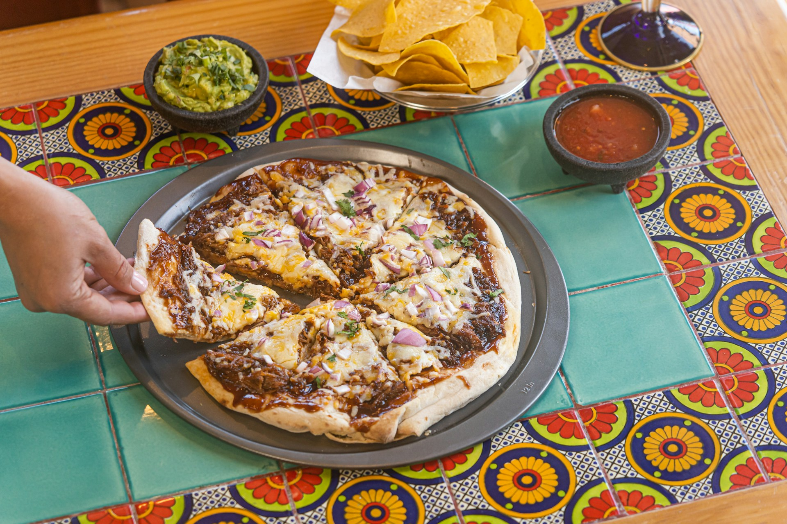

Mexican Pizza

Description
This Mexican pizza recipe layers delicious seasoned ground beef and refried beans between two crisp tortillas. Top with salsa, cheese, tomatoes, and jalapeño for incredible flavor in every bite!
Ingredients
- Ground Beef
- Refried Beans
- Salsa
- Monterey Jack
- Cheddar Cheese
- Tomatoes
- Green Onion
- Jalapeno Slices
Steps
- Cook the beef with onions and garlic, drain, and season.
- Place a tortilla on each pie plate and top with refried beans.
- Cover with the beef, top with another tortilla, and bake until the tortillas are crisp.
- Layer the toppings in this order: Salsa, cheeses, tomatoes, green onions, and jalapeño.
- Bake until the cheese is melted. Cool, then cut each pizza into four slices.
Return to top